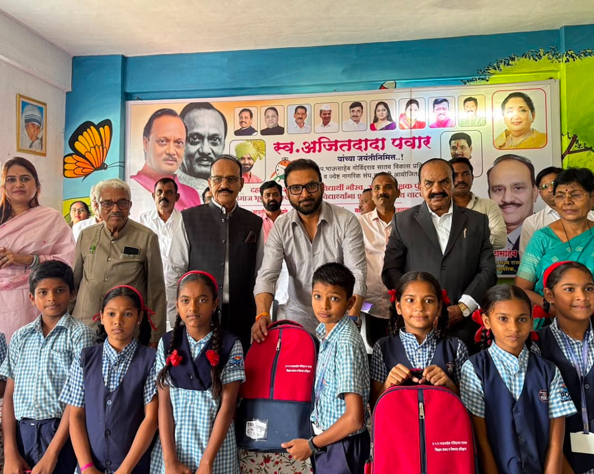
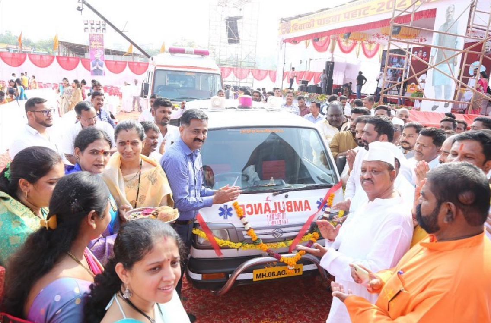
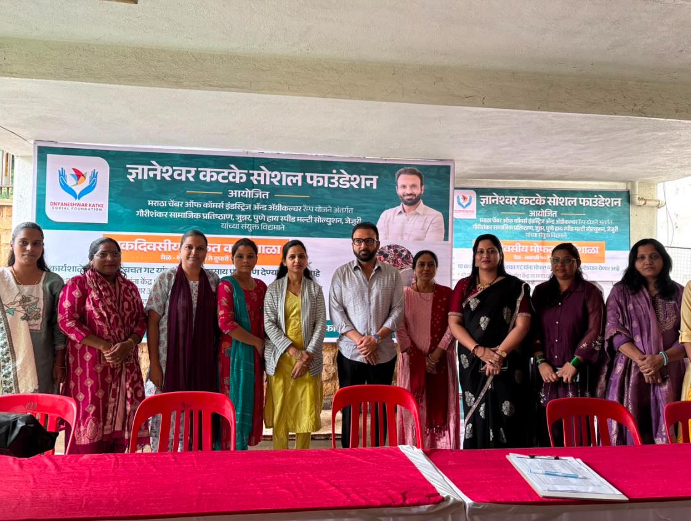
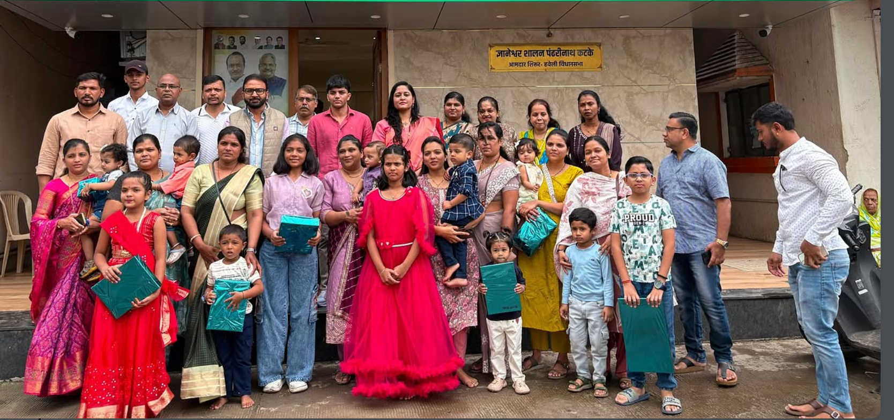
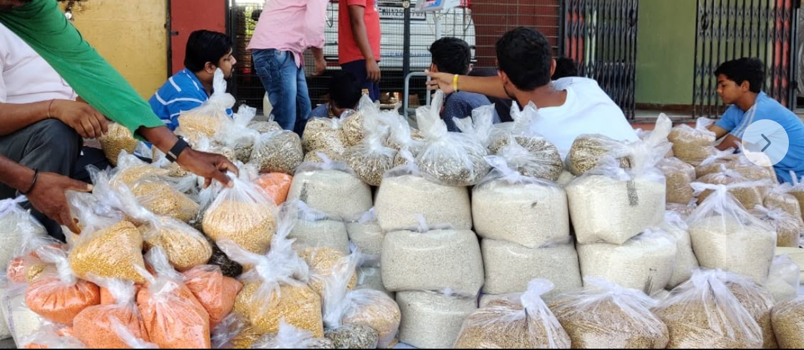
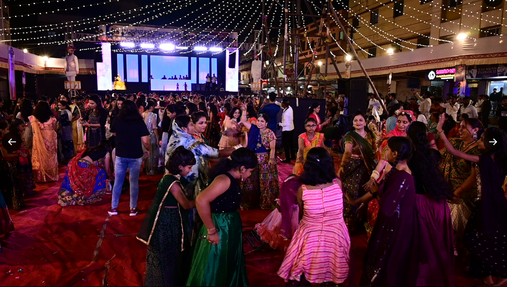
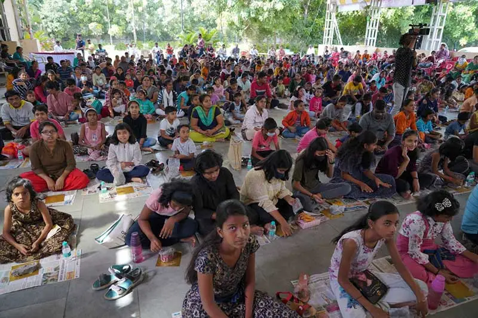
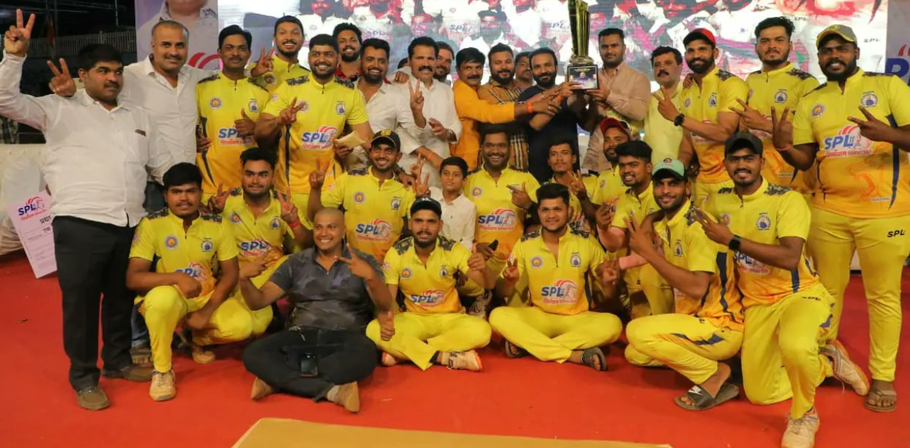

शिष्यवृत्ती कार्यक्रम
गुणवंत व गरजू विद्यार्थ्यांना शिष्यवृत्ती आणि शैक्षणिक आर्थिक मदत. [पात्रता व अर्ज कसा करावा]
आमचे सर्व उपक्रम सर्वांसाठी खुले आहेत.
गुणवंत व गरजू विद्यार्थ्यांना शिष्यवृत्ती आणि शैक्षणिक आर्थिक मदत. [पात्रता व अर्ज कसा करावा]

दहावी व बारावीत उत्तीर्ण झालेल्या गुणवंत विद्यार्थ्यांचा गौरव, करिअर मार्गदर्शन आणि गुणवंत शिक्षकांना पुरस्कार.

परिसरातील विद्यार्थ्यांना वह्या, दप्तर, रेनकोट व छत्र्यांचे मोफत वाटप.

परिसरातील नागरिकांसाठी मोफत रुग्णवाहिका सेवा, कोविड प्रतिबंधात्मक लसीकरण आणि सॅनिटायझेशन.

परिसरात ठिकठिकाणी मोफत आरोग्य तपासणी शिबिरांचे आयोजन.

रुग्णालयाच्या बिलांसाठी फाउंडेशनमार्फत शक्य तितकी मदत, तसेच शासकीय सवलत मिळावी यासाठी संबंधित कार्यालयांकडे पाठपुरावा.

महिला बचत गटांच्या माध्यमातून महिलांना रोजगाराच्या संधी उपलब्ध करून देणे.

स्वयंरोजगार सुरू करण्यासाठी महिलांना पीठ गिरणी व शिलाई मशीनचे वाटप.

गरजू व्यक्ती व महिला बचत गटांच्या सदस्यांना अन्नधान्याचे वाटप.

अन्नधान्यासोबत गरजू कुटुंबांना अत्यावश्यक वस्तू व तातडीची मदत. [तपशील जोडा]

उज्जैन, काशी, अष्टविनायक, तिरुपती बालाजी आणि मोहटादेवी येथे भाविकांसाठी मोफत यात्रा.

नवरात्रोत्सव आणि ईदनिमित्त इफ्तार भेट, सर्वांसाठी खुले कार्यक्रम.

शाडू मातीच्या गणेश मूर्ती बनविण्याच्या मोफत कार्यशाळा, हरित उत्सवासाठी.

परिसरात हिरवाईसाठी वृक्षारोपण मोहिमा.

फॅमिलीथॉन आणि बास्केटबॉल लीगसारखे खेळ व तंदुरुस्तीचे कार्यक्रम. [तपशील जोडा]

क्रिकेट, बास्केटबॉल आणि कुस्ती अशा स्पर्धांचे आयोजन व स्थानिक खेळाडूंना प्रोत्साहन.
सहभागी व्हा पानावरील फॉर्मद्वारे आम्हाला लिहा. विनंत्यांचा विचार विश्वस्त गुणवत्तेनुसार करतात.